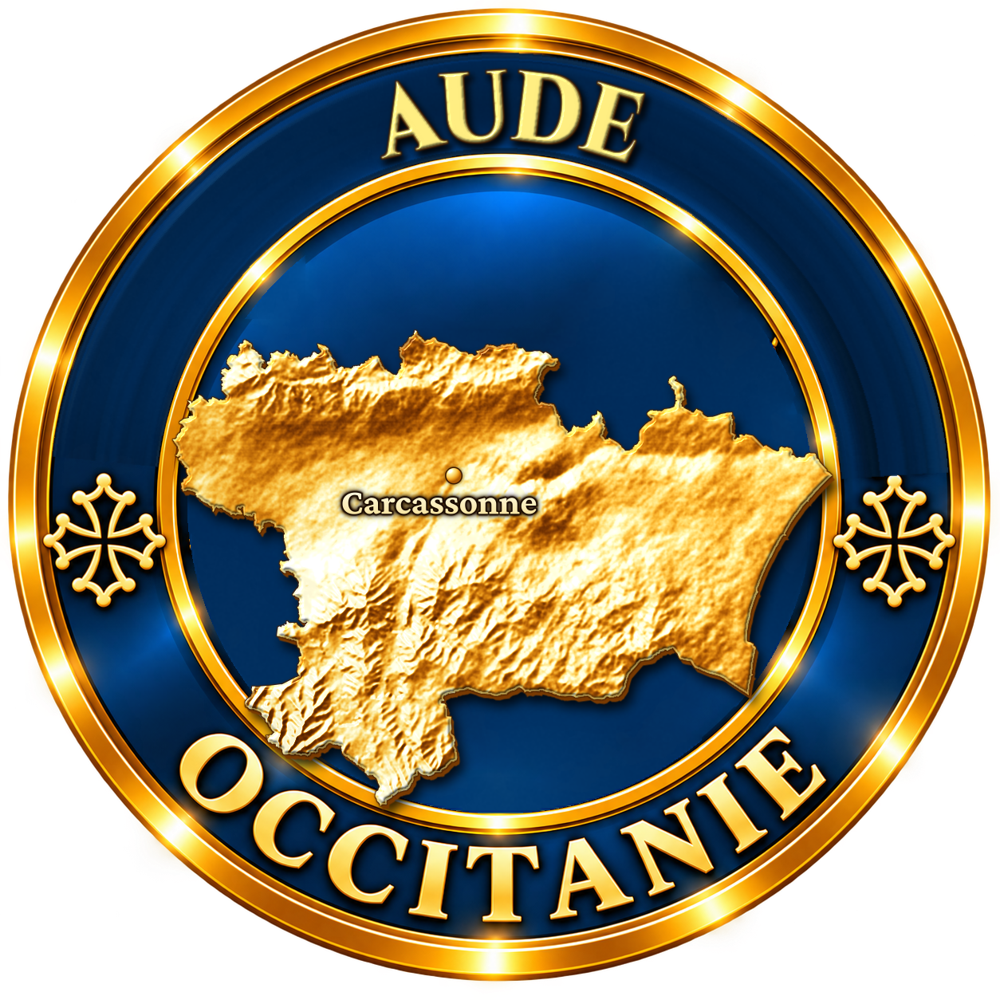
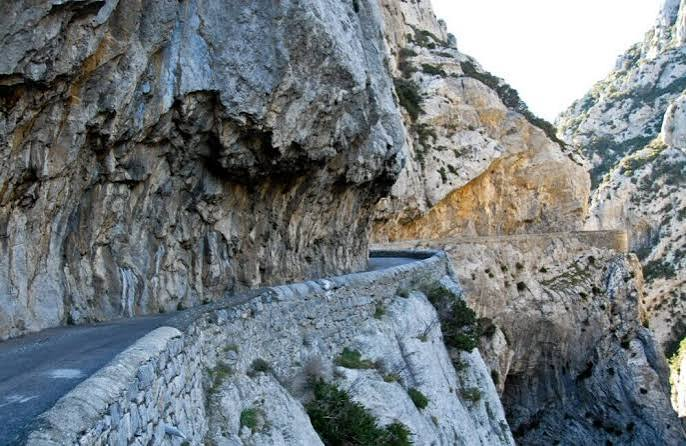

Gorges
de Galamus


⟹ Sites naturels & Panoramas ⟸

Aux confins de l'Aude et des Pyrénées-Orientales, entre Saint-Paul-de-Fenouillet et Cubières-sur-Cinoble, la rivière Agly a patiemment sculpté dans le calcaire un canyon vertigineux, classé site naturel depuis 1927. Sur environ 5 kilomètres, les parois atteignent par endroits plus de 500 mètres de dénivelé, resserrant la route en corniche taillée à flanc de falaise.

Accroché à la paroi rocheuse à 376 mètres d'altitude, l'ermitage Saint-Antoine de Galamus veille sur le canyon depuis le XVe siècle, lorsque des moines franciscains aménagèrent une grotte naturelle en chapelle. Le lieu, fréquenté depuis bien plus longtemps par des ermites en quête de solitude, devint un pèlerinage traditionnel les lundis de Pâques et de Pentecôte.
Déserté après la Révolution, l'ermitage fut réhabilité à partir de 1843 par le moine franciscain Marie-Joseph Chiron, qui y vécut plusieurs années. Le site a par la suite servi de décor à plusieurs tournages, dont La Neuvième Porte de Roman Polanski, séduit par l'atmosphère minérale et mystique du canyon.
Aujourd'hui, la route en corniche qui longe les gorges, la source née près du col de Linas au nord-est de Bugarach, et le sentier taillé dans la roche jusqu'à l'ermitage continuent d'attirer randonneurs et amateurs de géologie, dans l'un des paysages les plus spectaculaires du Pays cathare.
Les gorges marquent le passage entre l’Aude et les Pyrénées-Orientales. L’Agly s’est encaissée dans les puissantes formations calcaires du chaînon du Fenouillèdes, produisant un canyon aux parois spectaculaires qui dépassent localement plusieurs centaines de mètres.
La tradition érémitique est ancienne : le site officiel des gorges situe l’arrivée d’ermites dans les cavités naturelles vers le XIVe siècle et mentionne des bâtiments dès 1395. L’ensemble religieux, aménagé directement dans la falaise au-dessus de l’Agly, demeure l’un des éléments patrimoniaux majeurs du canyon.
Le relief, l’étroitesse de la route et la fréquentation estivale rendent le site particulièrement sensible. Les communes de Cubières-sur-Cinoble et Saint-Paul-de-Fenouillet ont mis en place des dispositifs saisonniers de circulation et de transport afin de limiter les encombrements et la pression automobile.
En 2026, un service de transport est annoncé du 6 juillet au 31 août. Il est recommandé de vérifier avant le départ les conditions d’accès, la circulation, la météo et les éventuelles restrictions liées aux risques naturels. L’ermitage possède par ailleurs des horaires saisonniers distincts.
Pic de Bugarach : point culminant des Corbières, visible depuis les hauteurs du canyon
Cubières-sur-Cinoble : village audois à l'entrée nord des gorges
Saint-Paul-de-Fenouillet : petite cité catalane au débouché sud des gorges
Château de Peyrepertuse : forteresse cathare perchée, à quelques kilomètres